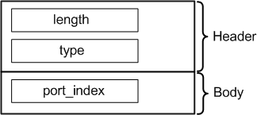

PortAttrType
Contains the port index. The data type is DRLPortAttr.

Field Name |
Data Type |
Description |
Comments |
|---|---|---|---|
length |
int |
Attribute length |
These fields form the attribute header |
type |
short |
Attribute type |
|
port_index |
short |
Port index |
|
Functional changes
- Introduced before SmarTest 6.3.2